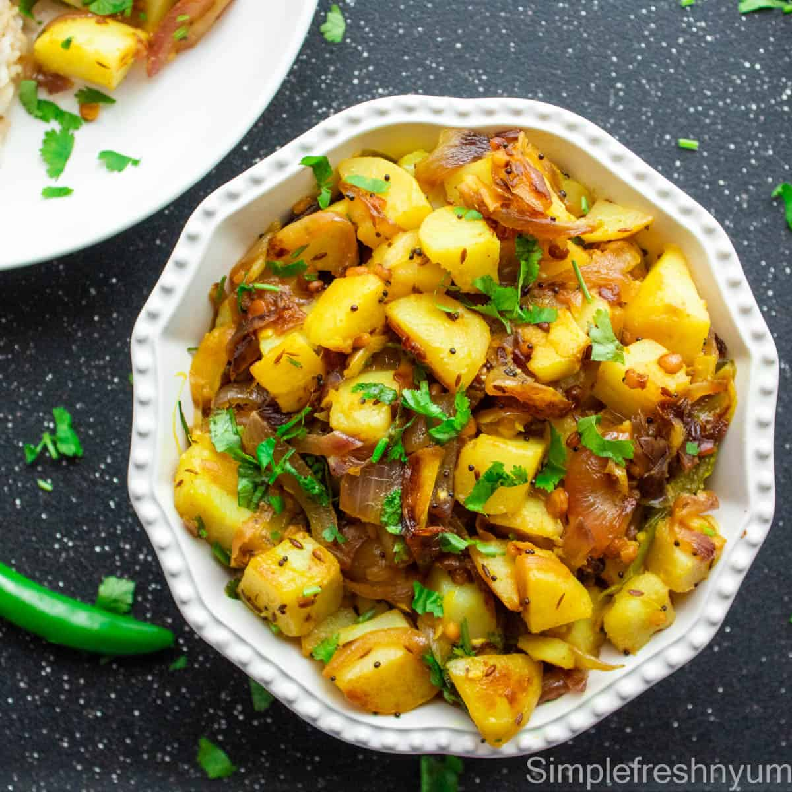

Potato Fry Recipe

Description
Potato Fry is an easy to make recipe in no time yet tasty and enjoyable requiring very less of ingredients (more can be added as per choice). Let's see how can we make it in as less time as possible.
ingredients
- Potatoes
- Spices(Turmeric, Cumin, etc.)
- Salt
- Oil for frying
Steps to make
- Cut the potatoes in desired shapes
- Heat the oil in a frying pan
- Fry potatoes untill red brown
- Strain the potatoes out of oil
- Add desired spices and salt to taste
- Serve hot